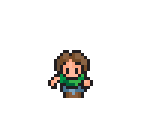
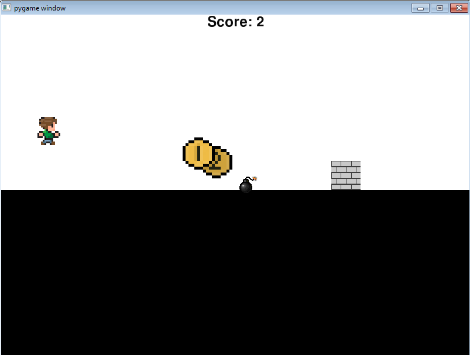
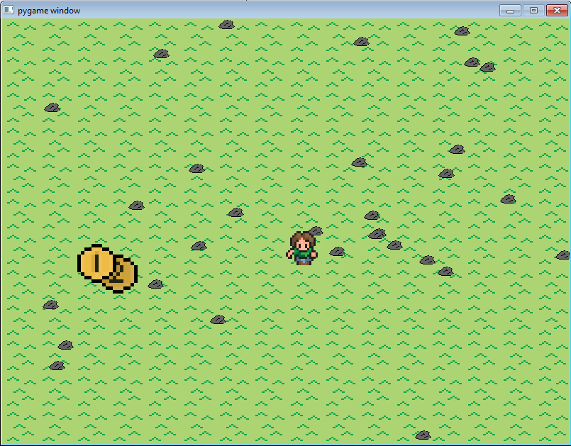
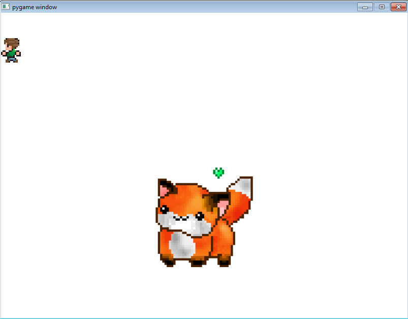

Python Projects & Content
UNIT ONE
Unit one was mainly there to introduce us to the basic building blocks of code, stuff like what an integer and string was and how to interact with it. We also learned how to create Runner files and files with classes on them to seperate them and make it easier to code. We also created our first moveable character on a new GUI window, we called him "Person." Aren't we creative?
We used this little guy here to move around and work with variables and we figured out how to stop him from going off the edge by setting several perameters that detected wether or not he was at the edge and prohibited from moving onward if he was.
We also worked with variables and input to create a math game with the user where they would give a specific number and we would display the result.
UNIT TWO
For this unit we worked with If Statements, and we did that to check if certain variables reached a point then we would have another command appear.
A prime example of this is our "LineRunner" program. We took the "Person" from before and had him jump and run against a wall that continually came at odds with the person. We created a series of if statements that checked when the person collided with the wall, when the person successfully evaded the wall, and when the person got points or lost points.
UNIT THREE
Unit Three was all about using loops for us. We explored using if statements in the previous units, so it was relatively easy for us to transition into using while loops to loop something repeatedly over and over again. We also worked with other forms of loops, including the kinds made by if statements and for statements.
We used that knowledge to build a game. We already knew how to create collision, and also how to add score. We took that principle, along with a few more for measuring time, created a game where you must move the character around before the time runs out and collect 10 coins. Needless to say, we used quite a few loops in this one, from detecting score, collision, game end, and Game Win.
UNIT FOUR
We used lists for this one. Strangely lists are apparently the most difficult, but sure...
Lists were used to create multiple different facades or skins to a character, for example when the guy turned left we gave him a left facing skin etc. We applied this to make it seem more realistic for the movement of the characters. We also used the lists to build another game where we had a list of objects that repeatedly came running at our guy and we kept track of all of them as the guy tried to move on to the other side of the road.